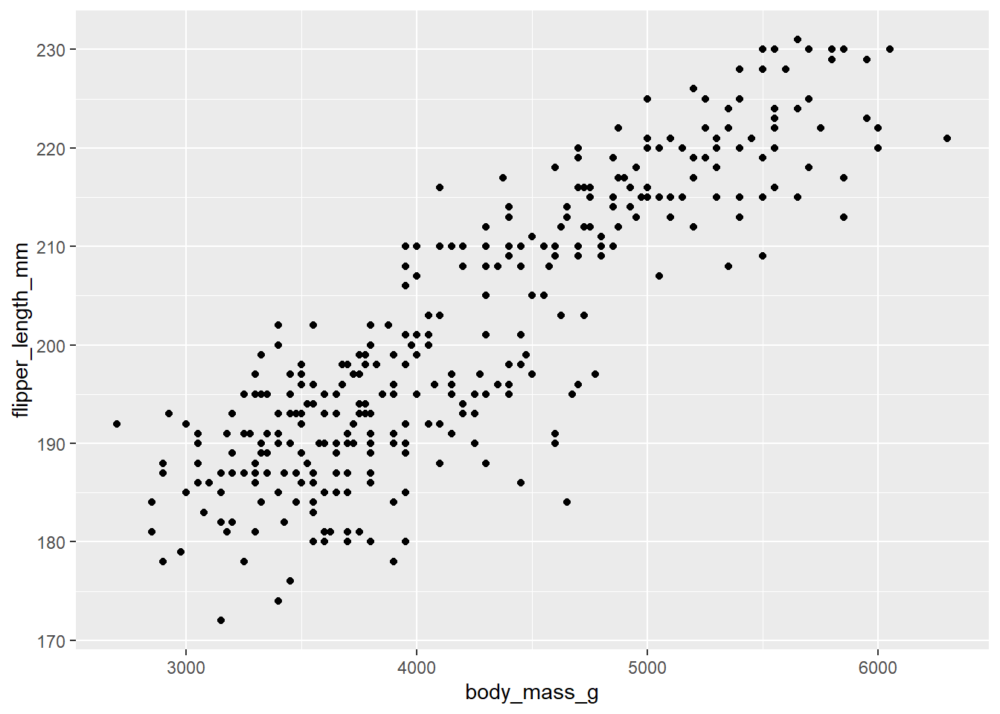
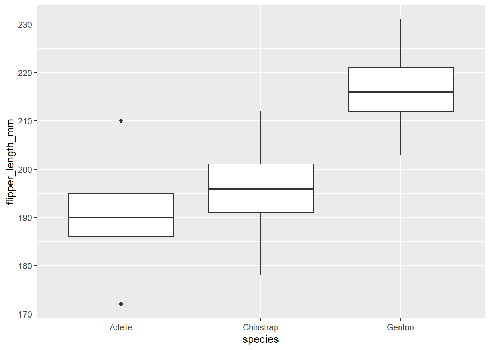

library(lme4)
library(tidyverse)
# install.packages("palmerpenguins") # install if needed
library(palmerpenguins)
library(ggplot2)Assignment 2: Wrapping up regression
Assignment 2: Wrapping up linear and logistic regression*
Assignment 2 covers linear and logistic regression models and includes many of the topics we have covered over the entire semester. You will be using palmerpenguins data, which includes a nice variety of continuous and categorical predictors.
To submit this assignment, render this file and save as a pdf. Upload the pdf to Canvas.
*This assignment does not include mixed effects models, but you will be seeing that on another assignment.
Load Packages
Load Data
Load the penguins data and examine it below (use summary(), etc.)
penguins <- penguins
summary(penguins) species island bill_length_mm bill_depth_mm
Adelie :152 Biscoe :168 Min. :32.10 Min. :13.10
Chinstrap: 68 Dream :124 1st Qu.:39.23 1st Qu.:15.60
Gentoo :124 Torgersen: 52 Median :44.45 Median :17.30
Mean :43.92 Mean :17.15
3rd Qu.:48.50 3rd Qu.:18.70
Max. :59.60 Max. :21.50
NA's :2 NA's :2
flipper_length_mm body_mass_g sex year
Min. :172.0 Min. :2700 female:165 Min. :2007
1st Qu.:190.0 1st Qu.:3550 male :168 1st Qu.:2007
Median :197.0 Median :4050 NA's : 11 Median :2008
Mean :200.9 Mean :4202 Mean :2008
3rd Qu.:213.0 3rd Qu.:4750 3rd Qu.:2009
Max. :231.0 Max. :6300 Max. :2009
NA's :2 NA's :2 skimpen <- skimr::skim(penguins)
view(skimpen)Question 1: Describe the data
What data is contained in this data set? Describe at least four variables (excluding year), including what they represent and their data type. Lastly, describe whether you think year would be a useful predictor in this data.
This data set contains information on different species of penguins being monitored. The variable island refers to which island the penguin lives on, the year variable tells us what year the penguin was born, then the variables flipper length, bill length, and body mass refer to each characteristic of that penguin. I do not think that year is a good predictor in this data, because the year each penguin is born does not determine their species or their characteristics.
Question 2: EDA
Explore your data visually. Create at least two visualizations that show the relationship between flipper_length_mm and its potential predictors.
ggplot(penguins, aes(x = body_mass_g , y = flipper_length_mm)) +
geom_point() 
ggplot(penguins, aes(x = species , y = flipper_length_mm)) +
geom_boxplot() 
Question 3: Apply a linear regression
Fit a simple linear regression model predicting flipper_length_mm from body_mass_g. Interpret the slope and intercept.
m1 <- lm(flipper_length_mm ~ body_mass_g, data = penguins)
summary(m1)
Call:
lm(formula = flipper_length_mm ~ body_mass_g, data = penguins)
Residuals:
Min 1Q Median 3Q Max
-23.7626 -4.9138 0.9891 5.1166 16.6392
Coefficients:
Estimate Std. Error t value Pr(>|t|)
(Intercept) 1.367e+02 1.997e+00 68.47 <2e-16 ***
body_mass_g 1.528e-02 4.668e-04 32.72 <2e-16 ***
---
Signif. codes: 0 '***' 0.001 '**' 0.01 '*' 0.05 '.' 0.1 ' ' 1
Residual standard error: 6.913 on 340 degrees of freedom
(2 observations deleted due to missingness)
Multiple R-squared: 0.759, Adjusted R-squared: 0.7583
F-statistic: 1071 on 1 and 340 DF, p-value: < 2.2e-16Interpret your model output in your own words below. Be sure to include a sentence explaining how body_mass_g impacts flipper_length_mm and whether or not the effect is significant.
Answer: In the model m1 the intercept shows that when body_mass is at 0 flipper length is 1.367mm. The body_mass_g at 1.528 suggests that as body mass increases, the flipper length increases by 1.528. This effect is significant to the data.
Question 4: Apply a multiple linear regression
Fit a linear regression model predicting flipper_length_mm from both body_mass_g and bill_length_mm. Interpret the slopes and intercept.
m2 <- lm(flipper_length_mm ~ body_mass_g + bill_length_mm, data = penguins)
summary(m2)
Call:
lm(formula = flipper_length_mm ~ body_mass_g + bill_length_mm,
data = penguins)
Residuals:
Min 1Q Median 3Q Max
-21.0989 -4.5520 0.3379 4.8942 16.0953
Coefficients:
Estimate Std. Error t value Pr(>|t|)
(Intercept) 1.220e+02 2.855e+00 42.715 < 2e-16 ***
body_mass_g 1.305e-02 5.452e-04 23.939 < 2e-16 ***
bill_length_mm 5.492e-01 8.008e-02 6.859 3.31e-11 ***
---
Signif. codes: 0 '***' 0.001 '**' 0.01 '*' 0.05 '.' 0.1 ' ' 1
Residual standard error: 6.488 on 339 degrees of freedom
(2 observations deleted due to missingness)
Multiple R-squared: 0.7884, Adjusted R-squared: 0.7871
F-statistic: 631.4 on 2 and 339 DF, p-value: < 2.2e-16Similar to Question 3, interpret the model output in your own words here:
Answer: Using both body mass and bill length to predict flipper length is statistically significant. bill_length_mm being at 5.492 is associated with having a larger body mass, a larger bill length and a larger flipper length. This means there is a strong, linear relationship between body mass and bill length as predictors of flipper length.
Question 5: Include an interaction
Fit a simple linear regression model predicting flipper_length_mm from body_mass_g, bill_length_mm, and the interaction of the two. Interpret the slopes and intercept.
m3 <- lm(flipper_length_mm ~ body_mass_g:bill_length_mm, data = penguins)
summary(m3)
Call:
lm(formula = flipper_length_mm ~ body_mass_g:bill_length_mm,
data = penguins)
Residuals:
Min 1Q Median 3Q Max
-26.3453 -4.6392 0.0653 5.0970 16.1850
Coefficients:
Estimate Std. Error t value Pr(>|t|)
(Intercept) 1.571e+02 1.313e+00 119.62 <2e-16 ***
body_mass_g:bill_length_mm 2.342e-04 6.752e-06 34.69 <2e-16 ***
---
Signif. codes: 0 '***' 0.001 '**' 0.01 '*' 0.05 '.' 0.1 ' ' 1
Residual standard error: 6.61 on 340 degrees of freedom
(2 observations deleted due to missingness)
Multiple R-squared: 0.7797, Adjusted R-squared: 0.7791
F-statistic: 1203 on 1 and 340 DF, p-value: < 2.2e-16Interpret the model output in your own words below. If there was a change in the pattern of significance, try to explain the logic below as well.
Answer: Model 3 shows that body mass and bill length together is a good predictor of flipper length. In model 1 and 2, they were significant predictors, but when compared to the two variables combined as a predictor, they are less significant. This means so far, the best predictor is body mass and bill length together.
Question 6: Compare models
Compare the models you built in Questions 4 and 5 using anova().
anova(m2,m3)Analysis of Variance Table
Model 1: flipper_length_mm ~ body_mass_g + bill_length_mm
Model 2: flipper_length_mm ~ body_mass_g:bill_length_mm
Res.Df RSS Df Sum of Sq F Pr(>F)
1 339 14270
2 340 14853 -1 -583.1 13.852 0.0002315 ***
---
Signif. codes: 0 '***' 0.001 '**' 0.01 '*' 0.05 '.' 0.1 ' ' 1Which is the better model? How do you know?
- Answer: The better model is model 2, because the p value is 0.0002, making it highly significant.
Is it possible to compare the models from Questions 3 and 5 using the same method? Why or why not?
- Answer: No, it is not possible to compare the models from 3 and 5, because they need a predictor in common. The model from question 3 uses body mass as a predictor, but the model from question 5 uses the combination of body mass and bill length. To compare the models, you would need them to be on levels stacked upon one another, but there isn’t a predictor in common. You could however use the model from 3 and compare it to the model from 4.
Question 7: Categorical predictors
Build a linear model that includes a categorical predictor of your choice. It is fine to stick with dummy coding. Optional: apply a different coding scheme AND interpret the output correctly for +1 extra credit.
m4 <- lm(body_mass_g ~ island , data = penguins)
summary(m4)
Call:
lm(formula = body_mass_g ~ island, data = penguins)
Residuals:
Min 1Q Median 3Q Max
-1866.02 -362.90 -6.37 433.98 1583.98
Coefficients:
Estimate Std. Error t value Pr(>|t|)
(Intercept) 4716.02 48.47 97.30 <2e-16 ***
islandDream -1003.11 74.25 -13.51 <2e-16 ***
islandTorgersen -1009.65 100.21 -10.08 <2e-16 ***
---
Signif. codes: 0 '***' 0.001 '**' 0.01 '*' 0.05 '.' 0.1 ' ' 1
Residual standard error: 626.3 on 339 degrees of freedom
(2 observations deleted due to missingness)
Multiple R-squared: 0.3936, Adjusted R-squared: 0.39
F-statistic: 110 on 2 and 339 DF, p-value: < 2.2e-16What is the reference level of your categorical predictor?
- Answer: The island Biscoe.
What is your interpretation of this model output? Address all coefficients.
- Answer: The island Dream has a slope of -1003.11, meaning with Biscoe at the reference level, the body mass of penguins on this island is statistically significant, and a penguins body mass is negatively correlated with this island. Meaning penguins on this island weigh less than penguins on Biscoe. The island Torgersen has a slope of -1009.65, also making it statistically significant, and meaning it has the same relationship between it’s penguins body mass as the island Dream does. The intercept being 4716.12 means that is the average weight of a penguin in grams on the Island Biscoe.
Question 8: Relevel your categorical variable
Relevel your categorical variable so that a different level becomes the reference. Then, run the same model you did in Question 7 and interpret the output.
Relevel:
penguins$island <- relevel(penguins$island, ref = "Dream") Apply model from Question 7:
m4 <- lm(body_mass_g ~ island , data = penguins)
summary(m4)
Call:
lm(formula = body_mass_g ~ island, data = penguins)
Residuals:
Min 1Q Median 3Q Max
-1866.02 -362.90 -6.37 433.98 1583.98
Coefficients:
Estimate Std. Error t value Pr(>|t|)
(Intercept) 3712.903 56.248 66.010 <2e-16 ***
islandBiscoe 1003.115 74.249 13.510 <2e-16 ***
islandTorgersen -6.531 104.193 -0.063 0.95
---
Signif. codes: 0 '***' 0.001 '**' 0.01 '*' 0.05 '.' 0.1 ' ' 1
Residual standard error: 626.3 on 339 degrees of freedom
(2 observations deleted due to missingness)
Multiple R-squared: 0.3936, Adjusted R-squared: 0.39
F-statistic: 110 on 2 and 339 DF, p-value: < 2.2e-16What is the new reference level of your categorical predictor?
- Answer: The new reference level is the Island Dream.
What is your interpretation of this new model output? Address all coefficients.
- Answer: This new model shows the avg weight of a penguin on the Island Dream is 3712 g, which is statistically significant. The Island of Biscoe has a slope of 1003, which is statistically significant, and this makes sense because when Biscoe was the reference level, the Island of Dream had a negative slope. What this means is that With the island of Dream at the reference level, there is a positive relationship between the weight of the penguins on Biscoe. The Isle of Torgesen has a negative slope of -6.531, which is not statistically significant. Again, this makes sense because when Biscoe was our reference level, Torgesen and Dream had similar slopes, with Torgesens being only slightly more negative. What this model tells me is that Torgesen and Dream both have a significantly lighter population of penguins on their island than Dream.
Question 9: Apply a logistic regression
Apply a logistic regression. Include as many predictor variables as you’d like. Remember that your predicted outcome variable needs to be binary (or categorical with two levels).
Hint: You could use sex or create a binary variable of your own (e.g., Gentoo vs. non-Gentoo) to test your model.
m5 <- glm(sex ~ species, data = penguins, family = binomial)
summary(m5)
Call:
glm(formula = sex ~ species, family = binomial, data = penguins)
Coefficients:
Estimate Std. Error z value Pr(>|z|)
(Intercept) 4.384e-16 1.655e-01 0.000 1.000
speciesChinstrap 1.026e-15 2.936e-01 0.000 1.000
speciesGentoo 5.043e-02 2.470e-01 0.204 0.838
(Dispersion parameter for binomial family taken to be 1)
Null deviance: 461.61 on 332 degrees of freedom
Residual deviance: 461.56 on 330 degrees of freedom
(11 observations deleted due to missingness)
AIC: 467.56
Number of Fisher Scoring iterations: 3What are your key takeaways from this model?
Answer: There is no significant relationship between sex and species. This tells me thee is a fairly even spread of sex across the penguin species.
Question 10: Synthesize the information
Imagine you’re a biologist studying penguin populations. Which predictors do you think are most important to measure or record in the field to predict flipper length? Why?
Answer: The most important predictors to measure and record in the field to predict flipper length are body mass, bill length and species. Body mass and bill length together are the strongest predictors for the flipper length, however, the species was a strong predictor for the body mass. I could guess that if I were to run additional models, then species would be the greatest predictor for flipper length.
Bonus: Stepwise Regression
Perform stepwise regression to find the best model for an outcome of your choice. You will likely encounter an error – fixing that error and explaining your findings will earn you +1 extra credit. Show your work.
###to do 3/8According to this stepwise regression, explain how the final model was selected.
Answer: (Write answer here)